LIEVEN GOUWY Systems Game Design / Narrative Design / Showrunner
LIEVEN GOUWY Systems Game Design / Narrative Design / Showrunner
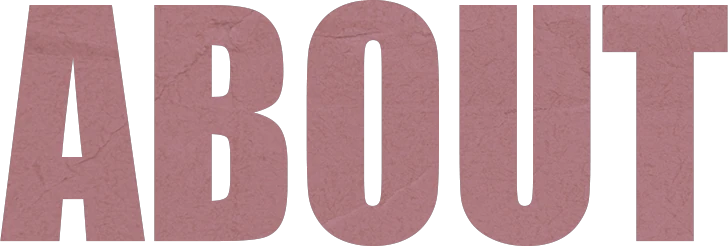
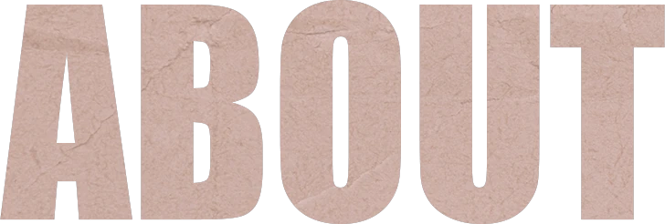
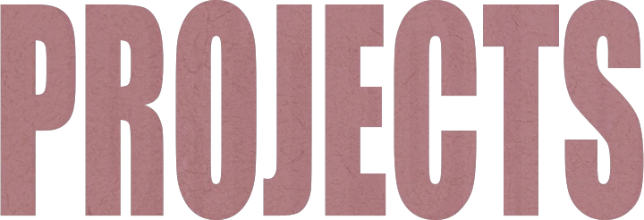
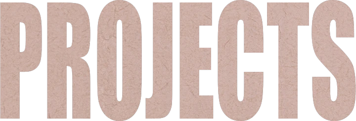
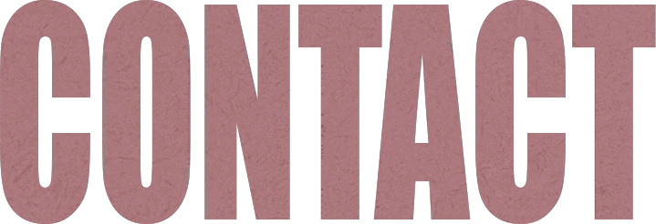
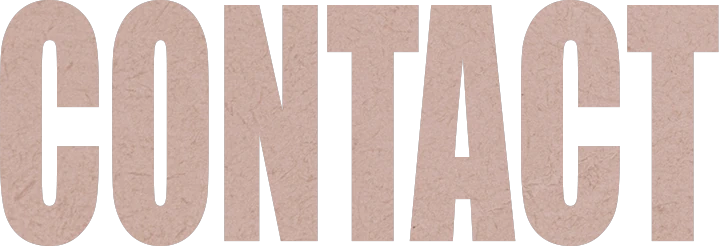
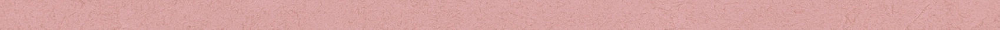
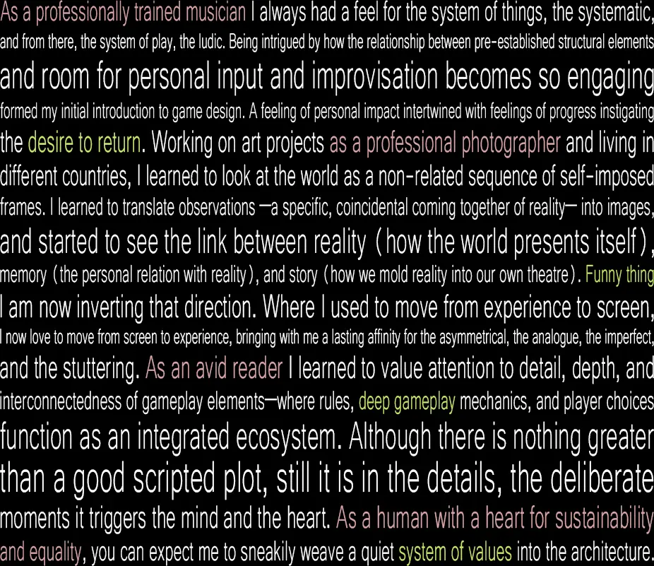
As a professionally trained musician I always had a feel for the system of things, the systematic, and from there, the system of play, the ludic. Being intrigued by how the relationship between pre-established structural elements and personal input or improvisation becomes so engaging, formed my initial introduction to game design. A feeling of personal impact intertwined with feelings of progress instigating the desire to return. Working on art projects as a professional photographer and living in different countries, I learned to look at the world as a non-related sequence of self-imposed frames. I learned to translate observations —a specific, coincidental coming together of reality— into images, and started to see the link between the objective world (how the world presents itself), memory (our personal relation to it), and story (how we mold reality into our own theatre). Funny thing I am now inverting that direction. Where I used to move from experience to screen, I now move from screen to experience, bringing with me a lasting affinity for the asymmetrical, the analogue, the imperfect, and the stuttering.As an avid reader and solution thinker I learned to value attention to detail, depth, and interconnectedness of gameplay elements—where rules, deep gameplay mechanics, and player choices function as an integrated ecosystem. Although there is nothing greater than a good scripted plot, it is still the deliberate moments of particular details that trigger both the mind and the heart. As a human driven by sustainability and equality, you can expect me to weave a quiet system of values into the architecture.
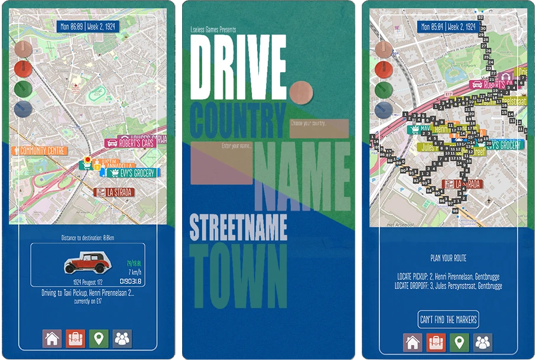
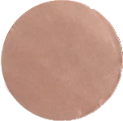
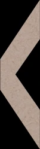
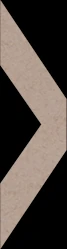
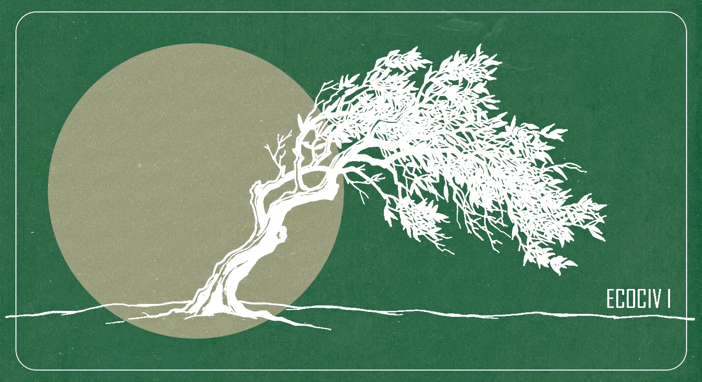
Inspired by Jeremy Lent's Ecocivilization and U.K. Le Guin's The Dispossessed and Eye of the Heron, you are the child of the Leader of The City, a rigid capitalist oligarchy, controlled by violence and built on extraction and exploitation. Through an extraordinary encounter you catch a glimpse of who lives on what you always believed to simply be the Moon. From then on nothing will ever be the same again.
Inspired by Jeremy Lent's Ecocivilization and U.K. Le Guin's The Dispossessed and Eye of the Heron, you are the child of the Leader of The City, a rigid capitalist oligarchy, controlled by violence and built on extraction and exploitation. Through an extraordinary encounter you catch a glimpse of who lives on what you always believed to simply be the Moon. From then on nothing will ever be the same again.
ECOCIV I is a 2.5D adventure puzzle and vernacular community-building exploration game where you grow a mobile open-source fabrication and resource-sharing society right under the noses of the oligarchs of The City. My aim with ECOCIV is to introduce symbiocene ideas as implicit values within a videogame economy.
ECOCIV I is a 2.5D adventure puzzle and vernacular community-building exploration game where you grow a mobile open-source fabrication and resource-sharing society right under the noses of the oligarchs of The City. My aim with ECOCIV is to introduce symbiocene ideas as implicit values within a videogame economy.
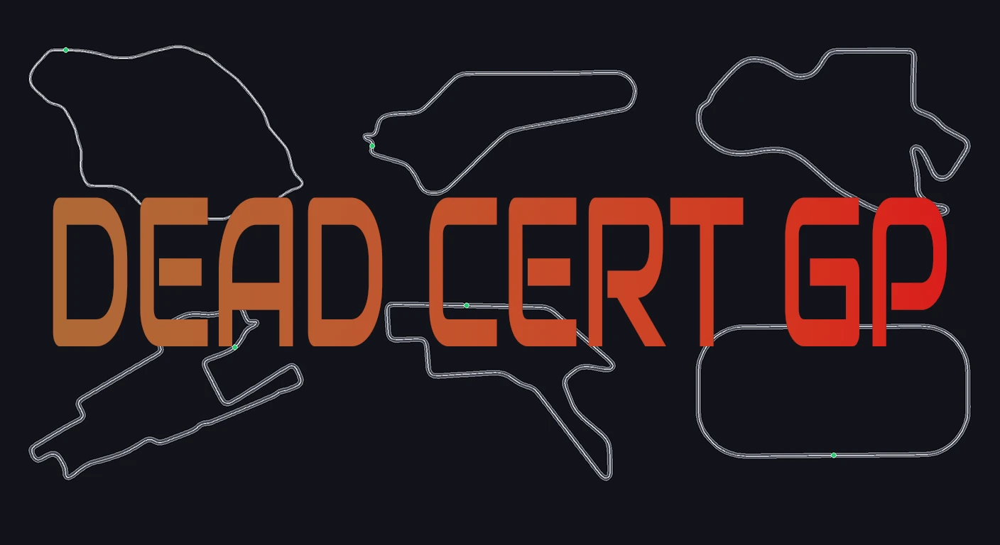
Also a fan of those addictive machine-learning simulation videos of AI figuring out how to run hurdles? I built that idea into an F1 betting game featuring all 77 seasons since 1950 with era-correct tracks. Bet on race winners, podiums, and championships against a growing pool of bettors, working your way up from 5CR low-stakes pools to the big leagues.
Also a fan of those addictive machine-learning simulation videos of AI figuring out how to run hurdles? I built that idea into an F1 betting game featuring all 77 seasons since 1950 with era-correct tracks. Bet on race winners, podiums, and championships against a growing pool of bettors, working your way up from 5CR low-stakes pools to the big leagues.
DEAD CERT GP is a python 2D game using pygame and numpy. Machine learning is done with neat-python for the genetic algorithm training with an added PPO (Proximal Policy Optimization) to teach generalisation on different track shapes.
DEAD CERT GP is a python 2D game using pygame and numpy. Machine learning is done with neat-python for the genetic algorithm training with an added PPO (Proximal Policy Optimization) to teach generalisation on different track shapes.
What if, on your 18th birthday, your grandmother who you have been living with since you were 8, tells you there is more to the passing of your parents than what you were previously told to believe?
What if, on your 18th birthday, your grandmother who you have been living with since you were 8, tells you there is more to the passing of your parents than what you were previously told to believe?
DRIVE is an android 2D a-synchronous competition car collecting game developed in Unity. Centered on deep gameplay and an evolving ever expanding world where systems are interconnected and all actions have consequences. Play anywhere on earth. Every street name, town, and city layout is an exact match to the real world.
DRIVE is an android 2D a-synchronous competition car collecting game developed in Unity. Centered on deep gameplay and an evolving ever expanding world where systems are interconnected and all actions have consequences. Play anywhere on earth. Every street name, town, and city layout is an exact match to the real world.
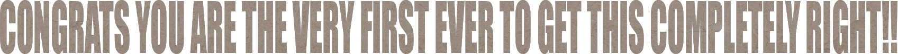
Congrats, you are the very first ever to get this completely right!!!
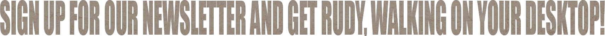
Sign up for our newsletter and get Rudy walking on your desktop! By signing up you agree to receive occasional emails — unsubscribe anytime.
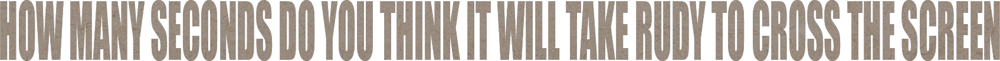
How many seconds do you think it will take Rudy to cross the screen?
00:00
Rudy's stepcounter: 1
Rudy's stepcounter: 1
The more things go on moving, interrelating, conflicting, the less balance there is and the more life. - U. K. Le Guin
The more things go on moving, interrelating, conflicting, the less balance there is and the more life. - U. K. Le Guin
By signing up you agree to receive occasional emails. Unsubscribe anytime · Privacy